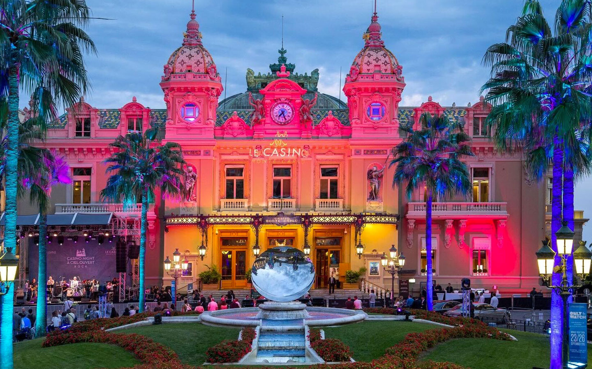
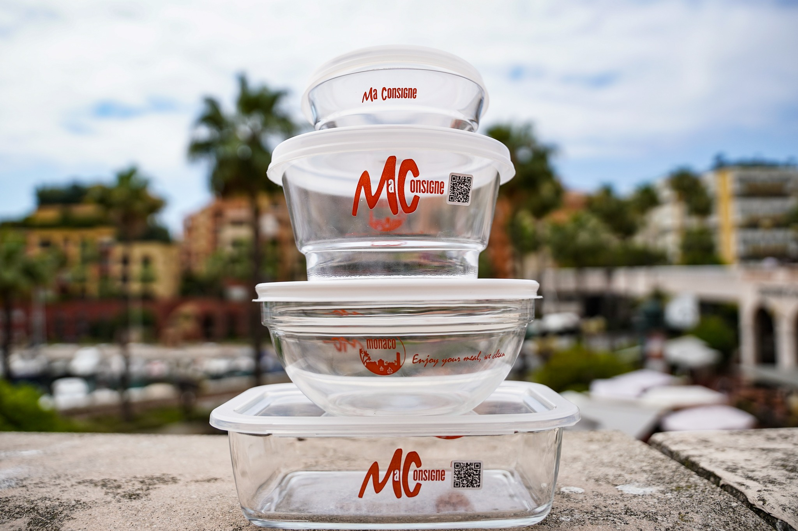

１．位置と分布
モナコは、フランスの南東隅、地中海に面するコートダジュール地方にある世界で2番目に面積が小さい国です。モナコ市街区（宮殿・政庁の所在地）、ラ・コンダミーヌ（港湾地区）、モンテカルロ（行楽地区）、フォンヴェイユ（新興地区）の4地区で構成されています。
.png)
モナコは、フランスの南東隅、地中海に面するコートダジュール地方にある世界で2番目に面積が小さい国です。モナコ市街区（宮殿・政庁の所在地）、ラ・コンダミーヌ（港湾地区）、モンテカルロ（行楽地区）、フォンヴェイユ（新興地区）の4地区で構成されています。
モナコでは、夏は短く、暖かく、高温で、乾燥状態、ほぼ晴れ、寒く、一部曇りです。1年を通して、気温は6℃から28℃変化しますが、3℃未満または30℃を超えることはめったにありません。
.jpg)
ヨーロッパの小さな国でありながら、その豪華さと美しさで世界中から観光客を引きつけています。特に、モナコのビーチはその美しさと清潔さで知られ、訪れる人々を魅了しています。

モナコのビーチは、その美しい海岸線と透き通った海水、そして豪華なリゾート施設が魅力的です。ビーチでのんびりと日光浴を楽しんだり、海で泳いだり、様々なウォータースポーツを楽しむことができます。
モナコは、多くの国と外交関係を持っており、国際連合やヨーロッパ評議会などの国際機関に加盟しています。 また 、フランスと一緒に行動することが多く、共同で国際的な問題に取り組んでいます。 1918年以来、モナコの軍事的安全はフランスが担っています。
モナコは、カジノが有名で、ヨーロッパの中でも大規模な施設を誇っています。
カジノ・ド・モンテカルロ
モナコ居住者のうち、モナコ国籍を持っているのは人口のわずか4分の1程度です。そのほかは他国の国籍保有者で、モナコは世界中からセレブが集まる国だといわれています。 その理由は、「タックス・ヘイブン」ともいわれるモナコの税制があります。モナコ居住者には個人所得税や相続税、ぞうお税などが課されないため、贈与税などが課されないため、 多くのセレブが高額な税金を逃れるために世界中から集まり、モナコに移住するといわれています。
「2030年までに使い捨てプラスチック撲滅」運動の一環として MaConsigneを開始しました。モナコの25軒の店でガラス製容器のデポジット制度が可能となりました。自動返却機もモナコ国内に20台設置され、モナコの経済システム及び環境対策システムにしっかり組み込まれた、近距離での巡回ゴミ処理制度が整えられたのです。
 |
 |